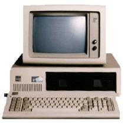
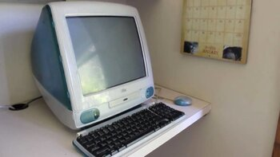
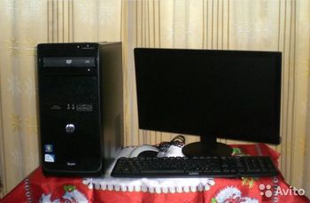

история компьютерных вирусов[1]
История появления и эволюции компьютерных вирусов, сетевых червей, троянских программ представляет собой достаточно интересный для изучения предмет. Зародившись как явление весьма необычное, как компьютерный феномен, в 1980-х годах, примитивные вирусы постепенно превращались в сложные технологические разработки, осваивали новые ниши, проникали в компьютерные сети. Идея вируса, заражающего другие программы и компьютеры, за двадцать лет трансформировалась в криминальный бизнес. Будучи изначально творчеством вирусописателей-исследователей, компьютерные вирусы стали оружием в руках интернет-преступников.
Одновременно происходило зарождение и становление индустрии антивирусной. Появившись в конце 1980-х, первые антивирусные разработки получили большую популярность, через 10 лет став обязательным к использованию программным обеспечением. Программисты, увлечённые разработкой антивирусных программ, становились основателями антивирусных компаний, небольшие и совсем мелкие компании выросли, некоторые из них стали гигантами индустрии. Конечно, повезло не всем — многие по разным причинам «сошли с дистанции» или были поглощены более крупными компаниями. Но антивирусная индустрия всё еще продолжает формироваться, и её, скорее всего, ждут большие изменения.
Помимо интереса теоретического, история развития вирусов может принести и практическую пользу — по ней можно предсказывать будущее развитие вредоносных программ, включая компьютерные в широком смысле этого слова, например, дальнейшую эволюцию вирусов на мобильных телефонах, проблемы безопасности «умных» домов будущего и т.п.
История компьютерных вирусов делится на несколько этапов:
Доисторический:

В начале 1970-х годов (предположительно в 1973 г.) в прототипе современного интернета — военной компьютерной сети APRANET — был обнаружен вирус Creeper, который перемещался по серверам под управлением операционной системы Tenex. Creeper был в состоянии самостоятельно войти в сеть через модем и передать свою копию удаленной системе. На зараженных системах вирус обнаруживал себя сообщением: «I’M THE CREEPER : CATCH ME IF YOU CAN», которое выводилось на дисплей или на принтер. Для удаления вируса была написана первая антивирусная программа Reeper, которая аналогичным образом распространялась по сети, удаляла обнаруженные копии Creeper и затем (предположительно — через определённый промежуток времени) самоликвидировалась. Доступной и достоверной информации о данном инциденте не обнаружено, по этой причине приведённые выше факты могут не вполне соответствовать истине.
Другие компьютерные легенды гласят, что также в начале 1970-х (предположительно — в 1974 г.) на мейнфреймах этого времени появляется программа, получившая название «Кролик» (Rabbit). Эта программа клонировала себя, занимала системные ресурсы и таким образом снижала производительность системы. Достигнув определенного уровня распространения на зараженной машине «Кролик» нередко вызывал сбой в её работе. Скорее всего «Кролики» не передавались от системы к системе и являлись сугубо местными явлениями — ошибками или шалостями системных программистов, обслуживавших компьютер.
Другой инцидент, который с определенными оговорками также можно отнести к разряду вирусных, произошел на системе Univac 1108 с игрой Pervading Animal. При помощи наводящих вопросов игра пыталась определить имя животного, задуманного играющим. В программе была предусмотрена возможность самообучения: если ей не удавалось отгадать задуманное человеком название, игра предлагала модернизировать себя и ввести дополнительные наводящие вопросы. Модифицированная игра записывалась поверх старой версии, а также копировалась и в другие директории — для того, чтобы сделать результат работы доступным и другим пользователям. В результате, через некоторое время все директории на диске содержали копии Pervading Animal
В те времена такое поведение программы вряд ли могло понравиться инженерам и менеджерам компаний, и через некоторое время был запущена «программа-охотник» (которая так и называлась — Hunter). Это была новая версия игры, целью которой было заменить все копии своей предшественницы, а затем удалить и себя саму. Однако позднее все решилось гораздо проще: для компьютеров Univac была выпущена новая версия операционной системы, в которой изменениям подверглась структура файловой системы, и игра потеряла возможность размножаться.
Описанный выше инцидент вполне реален, известны его участники и места событий — в интернете можно найти даже исходные коды Pervading Animal.
До-интернетовский:
Компьютеры становятся всё более и более популярными. Появляется всё больше и больше программ, авторами которых являются не фирмы-производители программного обеспечения, а частные лица. Развитие телекоммуникационных технологий даёт возможность относительно быстро и удобно распространять эти программы через серверы общего доступа — BBS (Bulletin Board System). Позднее, полулюбительские, университетские BBS перерастают в глобальные банки данных, охватывающие практически все развитые страны. Они обеспечивают быстрый обмен информацией между самыми удаленными точками планеты. «Глобальная сеть» серверов BBS становится популярной и в результате привлекает внимание программистов-хулиганов. Появляется большое количество разнообразных «троянских коней» — программ, не имеющих способности к размножению, но при запуске наносящих системе какой-либо вред.
Apple II, разработанный в 1977, стал одним из наиболее успешных персональных компьютеров того времени — было произведено около двух миллионов компьютеров этой марки. Он предназначался не только для профессионалов, но и для массового пользователя — это был компьютер для дома, он использовался в школах и университетах. В результате своей массовости он стал жертвой первого документально зафиксированного компьютерного вируса — некто Ричард Скрента (Richard Skrenta), один из миллионов пользователей Apple II, догадался разработать для этого компьютера саморазмножающуюся программу-вирус.
Вирус, получивший название Elk Cloner, записывался в загрузочные секторы дискет, к которым обращалась ОС компьютера. Проявлял себя вирус весьма многосторонне: переворачивал изображение на экране, заставлял мигать текст, выводил сообщение:
Фред Коэн, родоначальник компьютерной вирусологии того времени, на семинаре по компьютерной безопасности в Лехайском университете (США) демонстрирует на системе VAX 11/750 вирусоподобную программу, способную внедряться в другие объекты. Годом позже, на 7-й конференции по безопасности информации, он дает научное определение термину «компьютерный вирус» как программе, способной «заражать» другие программы при помощи их модификации с целью внедрения своих копий.
Зарегистрирована первая глобальная эпидемия вируса для IBM-совместимых персональных компьютеров. Вирус Brain, заражающий загрузочные сектора дискет, в течение нескольких месяцев распространился практически по всему миру. Причина такого «успеха» заключалась в полной неподготовленности компьютерного общества к встрече с таким явлением, как компьютерный вирус: антивирусных программ просто не было, а пользователи, в свою очередь, ничего не знали о новом компьютерном бедствии.
Вирус Brain был написан в Пакистане 19-летним программистом Баситом Фаруком Алви (Basit Farooq Alvi) и его братом Амжадом (Amjad). Они оставили в вирусе текстовое сообщение, содержащее их имена, адрес и телефонный номер. Помимо заражения загрузочных секторов и изменения меток дискет на фразу «(c) Brain» вирус ничего не делал: он не оказывал никакого побочного воздействия и не портил информацию. Как утверждали авторы вируса, работавшие в компании по продаже программных продуктов, они решили выяснить уровень компьютерного пиратства у себя в стране. К сожалению, эксперимент быстро вышел из-под контроля и выплеснулся за границы Пакистана. Интересно, что вирус Brain являлся также и первым «вирусом-невидимкой». При обнаружении попытки чтения зараженного сектора диска вирус незаметно подставлял его незараженный оригинал.
В том же году немецкий программист Ральф Бюргер (Ralf Burger) открыл возможность создания программой своих копий путем добавления своего кода к исполняемым MS-DOS-файлам формата COM. Опытный образец программы, получившей название Virdem и имевшей такую способность, был представлен Бюргером в декабре 1986, в Гамбурге, на форуме компьютерного андеграунда Chaos Computer Club, который в то время собирал хакеров, специализировавшихся на взломе VAX/VMS-систем.
Интернет-этап:

В январе 1999 разразилась глобальная эпидемия почтового интернет-червя Happy99 (также известного как Ska). По сути, это был первый современный червь, открывший новый этап в развитии вредоносных программ. Он использовал для своего распространения программу MS Outlook, являющуюся корпоративным стандартом в США и во многих странах Европы.
Практически одновременно с этим был обнаружен весьма интересный макро-вирус для MS Word — Caligula. Он просматривал системный реестр, находил ключи, соответствующие популярной программе шифрования PGP (Pretty Good Privacy), вычислял каталоги возможного нахождения программы и производил в них поиск базы данных ключей шифрования PGP версии 5.x. В случае обнаружения этой базы данных, вирус копировал её на удалённый FTP-сервер.
В конце февраля были зарегистрированы инциденты с участием SK — первого вируса, заражающего файлы помощи Windows (HLP-файлы).
26 марта: глобальная эпидемия почтового червя Melissa — первого макро-вируса для MS Word, сочетавшего в себе также и функциональность интернет-червя. Сразу же после заражения системы он считывал адресную книгу почтовой программы MS Outlook и рассылал свои копии по первым 50 найденным адресам. В автоматизированных системах документооборота письма с червём обрабатывались без участия человека — в результате эпидемия Melissa моментально достигла своего пика и нанесла ощутимый ущерб компьютерным системам мира: такие гиганты индустрии, как Microsoft, Intel, Lockheed Martin были вынуждены временно отключить свои корпоративные службы электронной почты.
7 мая: первый вирус для графического пакета CorelDRAW. Вирус Gala (также известный как GaLaDRieL), написанный на скрипт-языке Corel Script, стал первым, кто оказался способен заражать файлы как самого CorelDRAW, так и Corel PHOTO-PAINT и Corel Ventura.
В самом начале лета грянула эпидемия весьма опасного интернет-червя ZippedFiles (также известного как ExploreZip). Он представлял собой EXE-файл Windows, который после внедрения в систему уничтожал исходные тексты программ и файлы MS Office.
Октябрь принес компьютерному сообществу еще три неприятных сюрприза. Во-первых, был обнаружен вирус Infis, который стал первым вирусом, внедряющийся на самый низкий уровень безопасности — область системных драйверов Windows. Эта особенность делала вирус труднодоступным, антивирусные программы того времени были неспособны удалить вирус из системной памяти. Во-вторых, в конце месяца антивирусные компании сообщили о первом компьютерном вирусе, заражавшем файлы MS Project. В-третьих, проявился скрипт-вирус Freelinks, привлекший внимание вирусописателей к языку программирования Visual Basic Script (VBS) и ставший одним из предшественников печально известного вируса LoveLetter.
В ноябре — еще одна новинка. Появление нового поколения червей, распространявшихся по электронной почте — уже без использования вложенных файлов и проникавших на компьютеры сразу же после прочтения зараженного письма. Первым из них стал Bubbleboy, вслед за которым последовал KakWorm. Все вирусы этого типа использовали «дыру», обнаруженную в системе безопасности Internet Explorer.
7 декабря стал примечательным из-за обнаружения очередного творения бразильского вирусописателя по кличке Vecna — крайне сложного и опасного вируса Babylonia, который также открыл новую страницу в области создания вирусов. Это был первый вирус-червь, который имел функции удаленного самообновления: ежеминутно он пытался соединиться с сервером, находящимся в Японии, и загрузить оттуда список вирусных модулей. В случае если в этом списке находился более «свежий» модуль, нежели уже установленный на зараженном компьютере, то вирус автоматически его загружал. Позднее технология удаленного самообновления была применена в червях Sonic, Hybris и многих других.
Ближе к Новому Году по интернету разошлись слухи, что компьютерный андеграунд в лице злых хакеров и вирусописателей всего мира приготовил мировому сообществу «сюрприз» в виде сотен тысяч исключительно опасных вирусов, способных нанести мировым сетям непоправимый ущерб. Антивирусные компании делятся на два лагеря. Один подтверждает возможность атаки, представители второго — успокаивает пользователей, утверждая, что вероятность такой атаки крайне мала. К счастью, интернет-катастрофа не состоялась. Этот Новый Год ничем не отличался от остальных.
Очередные подвижки среди производителей антивирусных программ: софтверный гигант Computer Associates (CA) приобретает австралийского разработчика антивирусных программ Cybec (VET AntiVirus). Таким образом, в «копилке» CA, вслед за поглощенным в конце 1996 г. Cheyenne Software, оказался еще один антивирусный проект.
Современный, криминальный этап:

Тенденции второй половины 2004 года сохранились и в последующих 2005 и 2006 годах. «Громких» инцидентов практически не происходит, но зато двукратно растёт число разнообразных троянских программ, которые распространяются самыми разными способами: через интернет-пейджеры, веб-сайты, при помощи сетевых червей или традиционной электронной почты. При этом растёт «популярность» именно сетевых не-почтовых червей, которые проникают на компьютеры, используя различные дыры в программном обеспечении, например, черви Mytob и Zotob (Bozori), авторы которых были арестованы в августе 2005.
С этими червями произошел курьёз. Они проникли в сети и практически парализовали работу нескольких американских СМИ (ABCNews, CNN, New York Times), которые, обнаружив червя в своих собственных сетях, раздули истерию об якобы глобальной эпидемии, по силе сравнимой с эпидемиями сетевых червей 2003-2004 годов. Сказался, видимо, информационный голод на ставшие уже привычными глобальные инциденты прошлых лет, когда главными новостными темами были всплески эпидемий червей Mydoom, Bagle, Sasser и т.д.
Продолжали появляться новые вирусы и троянские программы для мобильных платформ, особенно часто — для операционной системы Symbian. Помимо ставшего уже обычным метода заражения через Bluetooth-соединения, они использовали и принципиально новые методы. 10 января: Lasco — первый пример вируса, не только рассылавшего себя на другие телефоны, но и заражавшего исполняемые файлы Symbian. 4 марта: Comwar — рассылает себя в MMS-сообщениях по контактам из адресной книги (аналогично первым компьютерным почтовым червям). 13 сентября: Cardtrap — троянская программа, пытавшаяся установить другие вредоносные файлы для Windows, т.е. попытка использовать кросс-платформенное заражение.
Октябрь-ноябрь: скандал c троянскими руткит-технологиями, обнаруженными на компакт-дисках от Sony BMG. Руткит-технологии использовались в защите от копирования дисков и скрывали её компоненты. Однако эти же технологии вполне могли быть использованы в злонамеренных целях, что и произошло практически сразу — 10 ноября был обнаружен первый троянец-бэкдор, пользовавшийся для маскировки в системе руткитом от Sony.
Происходят изменения и в антивирусной индустрии. Корпорация Microsoft активно готовится к выходу на антивирусный рынок и покупает сразу две антивирусные компании. 8 февраля 2005 объявляется о покупке компании Sybari, специализирующейся на технологиях для защиты электронной почты для Microsoft Exchange, а 20 июля объявлено о покупке FrontBridge Technologies, разрабатывавшей технологии фильтрации сетевого трафика, — в дополнение к антивирусу RAV, приобретённому в 2003, и Anti-Spyware компании GIANT — о покупке этой компании было объявлено 16 декабря 2004.
5 июля 2005 объявлено о слиянии Symantec и производителя систем резервного копирования Veritas. Рынок и индустрия расценивают данный шаг как превентивные защитные меры Symantec перед появлением на рынке решений от Microsoft.
Также в 2005 разворачивается скандал с очередной уязвимостью в приложениях Windows. На этот раз «дыра» была обнаружена в обработчике графического формата Windows Meta Files (WMF). Ситуация осложнилась тем, что информация о данной уязвимости была опубликована до выхода соответствующего обновления Windows — пользователи оказались беззащитными перед сотнями троянских программ, которые тут же начали использовать эту «дыру» для проникновения в компьютеры. Кроме того, про дыру стало известно 26 декабря — в начале рождественских каникул, и быстрая реакция от Microsoft была маловероятна. Так и произошло: после несколько дней молчания, 3 января 2006 г., Microsoft сообщает о том, что обновление Windows выйдет согласно «утверждённому графику», а именно 10 января. Мир IT-безопасности буквально взорвался огромным количеством критических, гневных, а порой и оскорбительных статей в адрес Microsoft. В конце концов, под валом критики, Microsoft не выдержала и 6 января 2006 года выпустила обновление MS06-001, исправляющее уязвимость в обработке WMF-файлов.
Источники:
1. Kaspersky